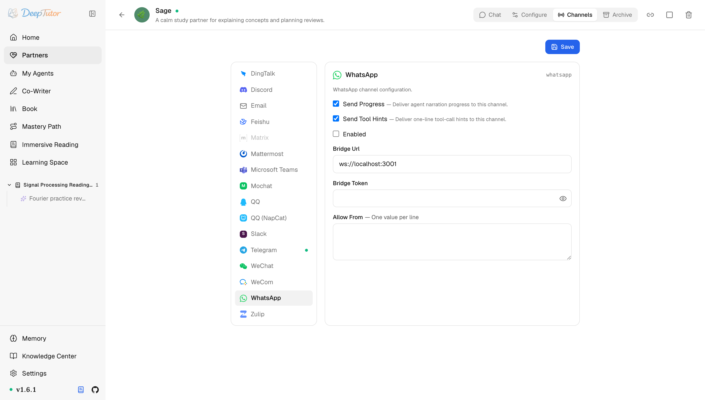

夥伴與管道WhatsApp
DeepTutor 接入 WhatsApp 教學！1 個 bridge 免費個人號，免企業認證免按條計費，斷線 5 秒自動重連！｜零度解說
透過外部 Node.js bridge（WhatsApp Web 協定）把 Partner 接入 WhatsApp。
原文連結：https://docs.deeptutor.info/zh-cn/partners/whatsapp/
海外朋友多、團隊在 WhatsApp 上溝通的，這期別錯過。
DeepTutor 的 whatsapp 管道，透過一個外部橋接程式（bridge）行程把學習夥伴（Partner）接到 WhatsApp 帳號：DeepTutor 和 bridge 之間走 WebSocket；bridge 負責登入 WhatsApp Web（掃一次碼）並雙向轉發訊息。
這麼做最大的好處，是繞開了官方 WhatsApp Business API 的門檻：不需要企業認證、沒有按條計費，個人號直接免費；代價是多跑一個行程。
但是問題來了。DeepTutor 本身不帶 bridge 實現，需要你自己跑一個基於 Node.js 18+ 的 bridge。
別慌，官方文件直接給了一個最小實現，照抄就能跑。接下來，我們把它從零跑起來。

bridge 發布 QR/status 事件後，卡片會在瀏覽器渲染 QR Code 與即時狀態。在那裡掃描 QR Code 並觀察 Waiting for scan 進入 Connected；bridge 終端機只作為舊版本的後備。

一、安裝依賴
Python 側依賴在 Partners 可選元件（extras）裡。bridge 另外需要一台 Node.js 18+ 的機器，可以和 DeepTutor 同機。
pip install -e ".[partners]"
# 或发布包支持 extras 时：
pip install "deeptutor[partners]"二、執行 bridge
DeepTutor 本身不帶 bridge 實現。任何基於 @whiskeysockets/baileys、說下面這套 JSON 協定的 bridge 都可以用。一個最小實現：
const { default: makeWASocket, useMultiFileAuthState } = require('@whiskeysockets/baileys')
const WebSocket = require('ws')
const wss = new WebSocket.Server({ port: 3001 })
let waSocket = null
async function start() {
const { state, saveCreds } = await useMultiFileAuthState('./auth')
waSocket = makeWASocket({ auth: state, printQRInTerminal: true })
waSocket.ev.on('creds.update', saveCreds)
waSocket.ev.on('messages.upsert', ({ messages, type }) => {
if (type !== 'notify') return
const message = messages[0]
if (!message || message.key.fromMe) return
const chatJid = message.key.remoteJid || ''
const senderJid = message.key.participant || chatJid
const content = message.message?.conversation
|| message.message?.extendedTextMessage?.text
|| ''
if (!chatJid || !senderJid || !content) return
const envelope = JSON.stringify({
type: 'message',
id: message.key.id || '',
sender: chatJid,
pn: senderJid,
content,
media: [],
timestamp: Number(message.messageTimestamp || Math.floor(Date.now() / 1000)),
isGroup: chatJid.endsWith('@g.us'),
})
wss.clients.forEach(client => {
if (client.readyState === WebSocket.OPEN) client.send(envelope)
})
})
}
wss.on('connection', (ws) => {
ws.on('message', (raw) => {
const message = JSON.parse(raw.toString())
if (message.type !== 'send' || !message.to || !message.text) return
waSocket?.sendMessage(message.to, { text: message.text })
})
})
start()npm install @whiskeysockets/baileys ws
node bridge.jsbridge 的 qr 事件會顯示在 DeepTutor 管道卡片中（範例 bridge 也可能同時列印）。手機上開啟 WhatsApp -> 設定 -> 已關聯的裝置 -> 關聯新裝置，掃描瀏覽器卡片。建議用行程管理器（pm2、systemd）守護 bridge；DeepTutor 斷線後每 5 秒自動重連。
Bridge 協定
- 連線建立時，如果設定了 Bridge Token ，DeepTutor 會先發
{"type": "auth", "token": "..."}。 - bridge 發給 DeepTutor：
{"type": "message", "id": ..., "sender": ..., "pn": ..., "content": ..., "media": ["/path", ...], "timestamp": ..., "isGroup": ...}。媒體檔案由 bridge 下載到本機路徑後透過media傳入，DeepTutor 會作為圖片/檔案附件處理。 - DeepTutor 發給 bridge：
{"type": "send", "to": "<jid>", "text": "..."}。 - bridge 還可以發
{"type": "status"}、{"type": "qr"}、{"type": "error"}事件。
語音訊息暫不支援轉寫，會以佔位文字進入對話。
三、設定管道卡片（channel card）
開啟 Partners -> 你的 partner -> Channels -> WhatsApp。
| 欄位 | 怎麼填 |
|---|---|
| Send Progress | 測試時建議開啟。長任務會把過程解說（narration）發到 WhatsApp。 |
| Send Tool Hints | 除錯時建議開啟；不想讓使用者看到一行工具呼叫就關掉。 |
| Enabled | bridge 跑起來、準備啟動管道時再開啟。 |
| Bridge Url | bridge 的 WebSocket 地址，預設 ws://localhost:3001 。 |
| Bridge Token | 可選共享金鑰。只有你的 bridge 驗證 auth 訊息時才需要填。 |
| Allow From | 一行一個值。測試可填 * 表示開放；上線後換成具體 sender id（WhatsApp id 裡 @ 前面那段，通常是手機號）。空列表拒絕所有人。 |
四、設定完成之後
- 儲存卡片， Enabled 開啟。
- 從 UI 或命令列工具（CLI）啟動（或重新啟動）partner，讓管道載入新設定。
- 觀察伺服器端日誌出現
Connected to WhatsApp bridge。 - 給登入在 bridge 上的 WhatsApp 號碼發一條短訊息。
- 在日誌裡看到真實 sender id 之後，把 Allow From 的
*換成明確值。
deeptutor partner start <partner-id>如何確認健康
健康的 WhatsApp 管道通常有三個跡象：
- DeepTutor 管道卡片進入 Connected ，不再重新整理 QR Code；
- DeepTutor 日誌出現
Connected to WhatsApp bridge； - 允許的傳送者發一條短訊息後，Partner 能正常回復。
常見問題
Bridge 連不上 / 管道一直重連
日誌反覆出現 WhatsApp bridge connection error 和 Reconnecting in 5 seconds...。檢查 bridge 行程是否在跑、Bridge Url 的主機和連接埠是否正確。DeepTutor 會一直重試，bridge 恢復後管道自動復原。
Bridge 反覆列印 QR Code
bridge 的登入狀態沒有持久化。確認它的 auth 目錄（範例裡是 ./auth）可寫且重新啟動後還在。另外手機離線約兩週後 WhatsApp Web 會話會過期，重新掃描 QR Code 即可恢復。
收得到訊息但回覆發不出去
如果 bridge 在回合中途斷線，DeepTutor 回覆時日誌會出現 WhatsApp bridge not connected。等 bridge 恢復連線後再發一條新訊息。入站訊息按 id 去重，bridge 重連不會產生重複回答。
實際效果還會受到模型、提示詞以及具體使用場景的影響，建議大家結合自己的需求實際體驗評估。